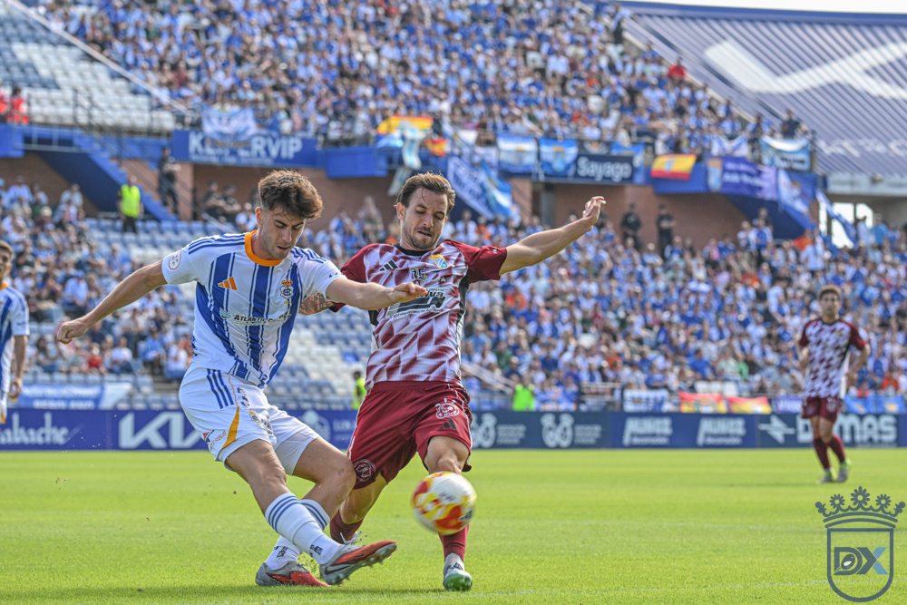

Recreativo and Xerez fans to seal a historic twinning between their supporters this Sunday

Photo: Diario XerecistaThe Federación de Peñas of the Decano will welcome the Agrupación de Peñas XCD 1947 at an official ceremony that crowns a union forged last season, ahead of the match between the two sides at the Nuevo Colombino
HUELVA. Grassroots football will show once again this Sunday that, beyond results and divisions, there is still room for brotherhood between sets of fans. The Federación de Peñas of Recreativo de Huelva has everything ready to welcome, from 14:30, a delegation from the Board of the Agrupación de Peñas XCD 1947, for the official ceremony that will seal the twinning between both groups of supporters.
A union forged last season
The bond between the two fan bases has not come about on a whim; it is the result of a process that began last season. It was then that the proposal came from Jerez to strengthen even further the historic ties between two sets of fans who share not only the blue-and-white shirt, but also the century-old tradition of their respective clubs. The response from Huelva was swift, embracing the initiative with enthusiasm until reaching the chapter that will be written this Sunday.
Unrestricted tickets to bring the stands together
The context in which this twinning takes place gives it special significance. Both Recreativo de Huelva and Xerez CD have chosen to make it easier for their respective fans to travel for this weekend's league fixture, making tickets available with no capacity limit and at prices adapted to the division in which both sides compete.
A decision that will allow a sizeable contingent of Xerez supporters to follow their team to Huelva, while the Recreativo faithful will be able to enjoy the game in the best possible conditions. The Federación de Peñas of the Decano has highlighted the value of a measure that gives the stands back the leading role in this kind of fixture.
The Agrupación de Peñas XCD 1947 itself has publicly expressed its gratitude for this gesture, stressing that when two clubs work so that thousands of supporters can enjoy a day like this together, it is football as a whole that benefits. A message echoed by the Federación de Peñas of Recreativo, which wished to thank both the Huelva club and Xerez for the facilities provided to turn the match into a true celebration shared between fans.
Time together among peñistas before heading to the Nuevo Colombino
The official twinning ceremony will not, however, be the only meeting point between the two sets of fans. After the official reception of the Jerez delegation, both federations will spend some time together at the Recreativo headquarters itself, with tapas and beer as the perfect excuse for the reunion, before heading together to the Nuevo Colombino stadium.
The organisers have issued an open invitation to peña presidents, peña members and Recreativo fans in general to join this gathering and accompany their Xerez brothers on a day that aims to go beyond the purely sporting. An opportunity to share a table, conversation and the stands, leaving colours in the background for a few hours to give centre stage to what truly unites both fan bases: a shared passion for football.
A twinning meant to last
The gathering has been set for this Sunday, 27 September, at 14:30, at the headquarters of the Federación de Peñas of Recreativo de Huelva. There, a twinning will officially begin that both federations hope to keep alive over time, and which this weekend will experience one of its most significant episodes to date.
Before the ball starts rolling, Recreativo and Xerez fans will share a table, conversation and the stands, on a day designed to champion those values that, despite the passing years and divisions, still give meaning to Spanish grassroots football.
Event details
Venue: Headquarters of the Federación de Peñas of Recreativo de Huelva
Day: Sunday, 27 September 2026
Time: 14:30